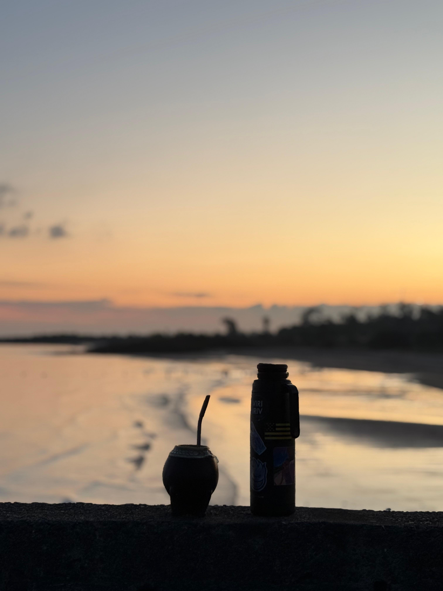
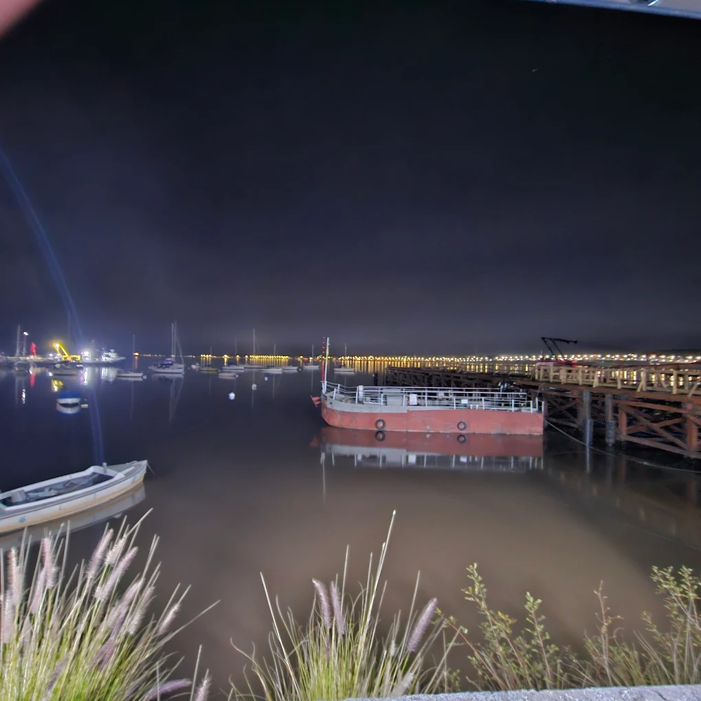

Handpicked experiences for curious travelers.


Explore Colonia del Sacramento’s UNESCO World Heritage historic district with a knowledgeable local guide. Walk through cobblestone streets, discover hidden corners, and hear the fascinating stories behind the city’s Portuguese and Spanish past.


Explore the iconic bullring and its history with private transfer and tickets included. Skip the line!


Meet locals, discover hidden gems, and enjoy specialty coffee.


Enjoy an elegant experience at Las Liebres, a boutique restaurant in Colonia del Sacramento. Taste selected Uruguayan wines paired with carefully crafted dishes in a relaxed and intimate setting. A perfect experience for food and wine lovers.




Discover the heart of Uruguayan culture through mate and traditional asado. Learn how locals prepare and share mate, enjoy a relaxed barbecue experience, and immerse yourself in everyday traditions.


Discover Uruguay’s most beloved tradition. Learn how to prepare and share mate like locals do, understand the ritual behind it, and enjoy a relaxed cultural moment while listening to stories about everyday life in Uruguay.


We love animals and know how hard it can be to be away from them. Join us for a relaxing walk through Colonia and enjoy traditional tortas fritas or churros along the way.


Experience Colonia like never before: dress in colonial outfits, take unique photos, enjoy an authentic Uruguayan chivito, and visit the iconic Plaza de Toros. A perfect mix of culture, gastronomy and history.


Experience the rhythm of Uruguay through candombe, one of the country’s most iconic cultural traditions. Learn the basics of traditional candombe drumming with local musicians and discover the history behind this Afro-Uruguayan heritage while playing the tambor yourself.


Discover Colonia del Sacramento in a comfortable guided golf cart tour. Explore the Historic Quarter, Real de San Carlos, the Rambla waterfront, and hidden local spots while learning about the city's history and culture. Perfect for all ages.


Explore Colonia del Sacramento by bicycle with a relaxed guided tour. Ride through the Historic Quarter, the Rambla waterfront and scenic local neighborhoods while discovering the city’s history and culture. Perfect for active travelers.


Enjoy a private candlelight dinner in a charming colonial setting, perfect for couples looking for a magical night.


Discover the rural side of Colonia on horseback. Enjoy a relaxed ride through open fields and quiet paths, surrounded by nature and local traditions.


Ride through Colonia while enjoying cold beer with friends in a fun and unique way. Minimum of 6 participants.


Take to the skies with a certified pilot and discover Colonia from above. Enjoy breathtaking aerial views of the Río de la Plata and the historic city.

Step back in time and dress in traditional colonial attire. Enjoy a delicious local lunch and experience the charm of historic Colonia while capturing unforgettable memories in the old town.


Visit the Kerayvoty Animal Reserve in Juan Lacaze, enjoy a traditional Uruguayan asado in Santa Ana, and relax by the beautiful coastal beaches before returning to Colonia.


Explore the charming town of Carmelo on a full-day experience combining a guided city tour with visits to local wineries. Discover the town’s history, walk along the riverfront, and enjoy wine tastings surrounded by beautiful vineyards in one of Uruguay’s most renowned wine regions.


Discover the Swiss heritage of Nueva Helvecia on this full-day experience. Visit traditional cheese factories, explore the historic town, stop at the Schoenstatt Sanctuary, and see iconic landmarks like the Hotel Suizo while learning about the culture and traditions brought by Swiss immigrants.


Enjoy a scenic horseback ride through the countryside, followed by a special dinner at Las Liebres. End the night with a unique stargazing experience led by an astrophotographer who will guide you through the stars and capture unforgettable night sky photos.